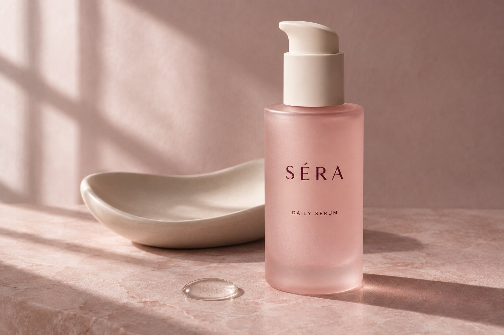

01
MOISTURE
角層に、うるおいを。
乾燥が気になる肌に、水分を補うケアを。しっとりとした肌を目指す、日々のひと手間。
A LITTLE RITUAL, JUST FOR YOU.
忙しい毎日に、肌と向き合う小さな余白を。
うるおいを重ねる時間が、
自分を大切にする時間になる。
DAILY SERUM / 30 mL

A soft beginning.Not more.
Just what matters.
足すことより、向き合うこと。
次の予定、届く通知、終わらないやること。
毎日は、気づかないうちに足早になるから。
洗顔後、手のひらに美容液をとる。
肌にそっと触れて、今日の自分をいたわる。
そんな小さな習慣を、SÉRAは大切にしています。
特別な日のためだけではなく、
何でもない一日の、心地よい始まりに。
毎日、手に取りたくなる理由。
使う瞬間から、使い終わったあとまで。
日々のお手入れになじむ美容液を考えました。
MOISTURE
乾燥が気になる肌に、水分を補うケアを。しっとりとした肌を目指す、日々のひと手間。
TEXTURE
肌に広げる時間も大切に。朝と夜、いつものお手入れに取り入れやすい使用感をイメージしました。
DAILY RITUAL
洗面台に置いたときも、手に取ったときも。毎日の風景になじむ、シンプルなボトルデザイン。
※商品・処方・使用感は自主制作のためのコンセプトです。実在する製品の効能や試験結果を示すものではありません。
YOUR SKIN. YOUR PACE.
朝も、夜も。わたしに触れる時間。
たくさんのステップよりも、
今日の肌を、丁寧に感じることから。
洗顔・化粧水のあと、適量を清潔な手のひらにとります。
顔の中心から外側へ、やさしく広げます。
手のひらでそっと包み込み、仕上げに乳液やクリームを。
MEET YOUR DAILY ESSENTIAL
セラ デイリーセラム〈美容液〉
わたしを大切にする時間を、ここから。
こちらはポートフォリオ用の架空商品です。
購入・予約・個人情報の入力はできません。
A FEW MORE THINGS
本ページはデザインポートフォリオとして制作した架空ブランドのLPです。商品の販売は行っていません。
美容・コスメ分野のLP案件を想定し、ブランドコンセプト、構成、コピー、ビジュアル、レスポンシブ実装を一貫して制作しています。
商品画像はAIで制作した架空商品のイメージです。商品名、パッケージ、処方・使用感の説明はコンセプトであり、実在商品の情報ではありません。